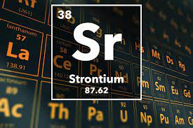

STRONTIUM

PROPERTIES
1)Strontium is a soft, silver-yellow, alkaline-earth metal.
2)strontium must be stored out of contact with air and water.
3)powdered strontium metal will react with air to produce strontium oxide and strontium nitride.
4)Strontium compounds can move through the environment easily.
5)Strontium is always present in air as dust, up to a certain level.
Reaction with water
Sr (s) + 2H2O (g) -> Sr(OH)2 (aq) + H2 (g)